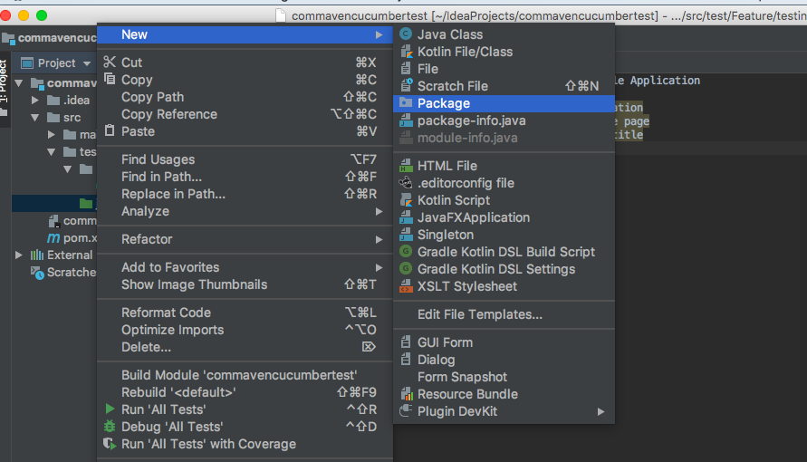

Step Definition links Feature file steps to Actual Java Code, to drive the execution.
Right click on maven Java folder --> New --> Package --> Give Package name as stepDefinition.
Right click on Package folder --> New --> Class --> Give class name as
any class name.

Right click on feature file --> Run feature file --> It will generage stepDefinition as below.
You can implement missing steps with the snippets below:
@Given("User launch google application")
public void user_launch_google_application() {
// Write code here that turns the phrase above into concrete actions
throw new io.cucumber.java.PendingException();
}
@Then("User should see google home page")
public void user_should_see_google_home_page() {
// Write code here that turns the phrase above into concrete actions
throw new io.cucumber.java.PendingException();
}
@Then("User validate google page title")
public void user_validate_google_page_title() {
// Write code here that turns the phrase above into concrete actions
throw new io.cucumber.java.PendingException();
}
@Then("user close the application")
public void user_close_the_application() {
// Write code here that turns the phrase above into concrete actions
throw new io.cucumber.java.PendingException();
}
# Now copy this code and paste it inside the class which just now created for stepDefinition.
# Remove any additional line inside Given, Then methods.
# Import below two lines.
import io.cucumber.java.en.Given; import io.cucumber.java.en.Then;
Finally class file would have below code.
package stepDefinition; import io.cucumber.java.en.Given; import io.cucumber.java.en.Then; public class StepDeftest1 { @Given("User launch google application") public void user_launch_google_application() { } @Then("User should see google home page") public void user_should_see_google_home_page() { } @Then("User validate google page title") public void user_validate_google_page_title() { } @Then("user close the application") public void user_close_the_application() { } }
Now Complete Class file with Java code as described....
package stepDefinition; import io.cucumber.java.en.Given; import io.cucumber.java.en.Then; import org.openqa.selenium.By; import org.openqa.selenium.WebDriver; import org.openqa.selenium.chrome.ChromeDriver; import org.openqa.selenium.chrome.ChromeOptions; public class StepDeftest1 { WebDriver driver = null; @Given("User launch google application") public void user_launch_google_application() { // Launching Google Application System.setProperty("webdriver.chrome.driver","/Users/myusername/Downloads/chromedriver"); driver = new ChromeDriver(); driver.manage().window().maximize(); driver.get("http://google.com/"); } @Then("User should see google home page") public void user_should_see_google_home_page() { // Validating google search button driver.findElement(By.xpath("(//input[@value='Google Search'])[2]")).isDisplayed(); } @Then("User validate google page title") public void user_validate_google_page_title() { // Checking for page title... if(driver.getTitle().equals("Google")) { System.out.println("Google Pge Title is Pass"); } } @Then("user close the application") public void user_close_the_application() { // Close the application driver.quit(); } }
We are good with stepDefinition, let's move on to crate testRunner file